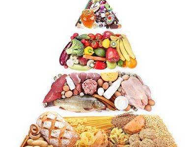

狐臭者的注意事项有很多，比如，卫生，以及保证腋下部位的干燥，是非常关键的两个方面，但除此之外，也还有其他方面的注意事项，比如，要注意科学的饮食，尤其是应该禁忌刺激性食物等，下面就狐臭者的饮食注意事项进行介绍：

1. 不能吃“有味”食品
不能吃“有味”食品：味浓或刺激性食物，如洋葱、蒜头和辛辣的食物，含有硫磺的化学物质，可干扰细菌生长，但它们被人体吸收后，异味会随汗腺排出，所以还是少吃为妙。
2. 不能吃多油花生果仁
不能吃多油花生果仁：人吃了带有油分的食物，部分油就跟着血液全身走，并会随汗腺连接的油脂腺排出体外。那些油原本似面霜那样，令我们的皮肤滑溜溜，但如果太多的话，就会让细菌分解，形成体臭，所以油腻的食物宜少食。
3.不能吃过多红肉红肉
不能吃过多红肉红肉：即猪肉、牛羊肉，含较多蛋白质，但细菌就最喜欢蛋白质，因可供营养给它们。所以本身有狐臭的人，吃的分量就要减少，且多吃白肉即禽肉、鱼肉，最好一日两餐，每餐3-4两肉就已经足够了。
4.不能吃有“刺激性”的食品
不能吃有“刺激性”的食品：即烟、酒、茶，香烟、浓茶、烈酒、咖啡、可可等对皮肤粘膜都有刺激性，尤其是酒，因酒精的刺激性更大，所以会加重病情。
狐臭的饮食注意事项有很多，上述中的几个方面都是重点，另外，也要注意的是，夏季是狐臭味道最明显的时期，在平时的生活中，一定要有高度的警惕，尤其是应该重点关注卫生方面的问题。